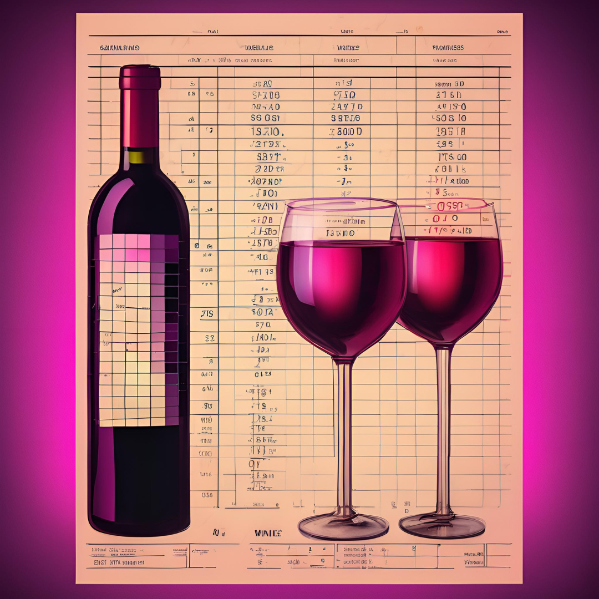

My name defines a lot of who I am. I like to behave like a star in the solar system: with intensity, brightness, and authenticity. I learned to be a Scientist when I graduated in Biology, discovering my critical, researching, and questioning side. I learned to be a Data Scientist in my postgraduate studies, where I realized that I could use my scientist side to look at analyses with different eyes and obtain important information through data.
A detailed analysis using statistical and visual techniques to uncover patterns and insights in the food delivery market.
A detailed analysis using statistical and visual techniques to uncover patterns and insights in the food delivery market.
Classifying customer sentiment across airlines using NLP and Machine Learning models, with insights into the impact of reviews on each airline's Net Promoter Score (NPS).
Classifying customer sentiment across airlines using NLP and Machine Learning models, with insights into the impact of reviews on each airline's Net Promoter Score (NPS).
A trend analysis of ENEM exam questions, visualizing word proximity to classify questions as physics, chemistry, or biology with Random Forest model.
A trend analysis of ENEM exam questions, visualizing word proximity to classify questions as physics, chemistry, or biology with Random Forest model.
Analysis of factors influencing customer churn for a telecommunications company and identification of factors leading to customer retention.
Analysis of factors influencing customer churn for a telecommunications company and identification of factors leading to customer retention.
A comparative study of conditional probability calculations for Titanic survivors, contrasting manual methods with insights derived from the Bayesian Naive Bayes machine learning model.
A comparative study of conditional probability calculations for Titanic survivors, contrasting manual methods with insights derived from the Bayesian Naive Bayes machine learning model.
Analyzing wine quality by applying the KNN algorithm to identify key factors affecting quality ratings.
Analyzing wine quality by applying the KNN algorithm to identify key factors affecting quality ratings
This was my first scientific paper published in a journal. Through this experience, I enhanced my skills in data visualization using R and creating statistical graphics.
In this text, I discuss how to transform categorical variables into numerical ones using practical examples, such as mapping strings to numbers, Label Encoding, and One Hot Encoding. To check out more publications like these, visit my Linkedin.